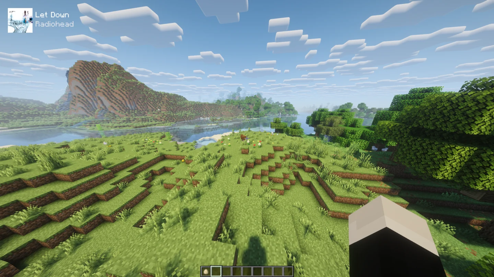
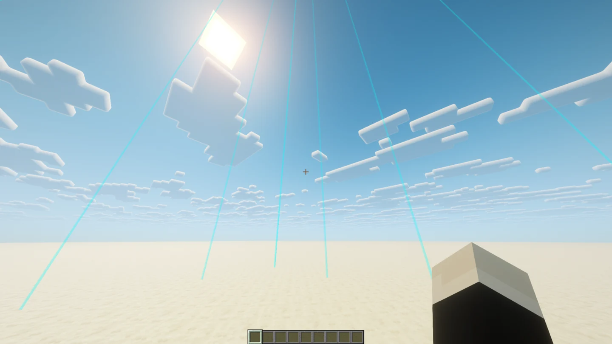
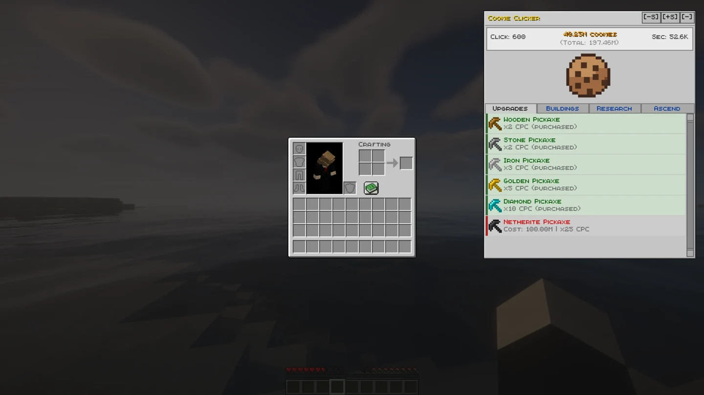
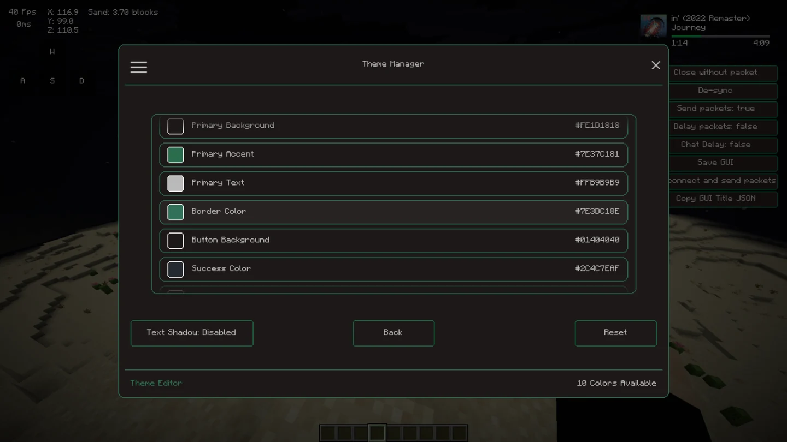

AudioBridge
See the current track, artist, and album art on your Minecraft HUD while listening on Windows.
View on ModrinthFor Minecraft Java Edition Fabric

See the current track, artist, and album art on your Minecraft HUD while listening on Windows.
View on Modrinth
Customize your chunk grid and toggle it with a keybind. Adjust line thickness and color in game.

An inventory idle game with buildings to buy, research to unlock, and Nether Star prestige bonuses.

Arrange HUD elements, change interface colors, and manage keybinds from an in-game menu.